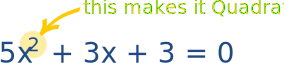
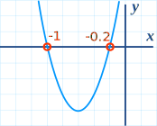
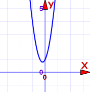
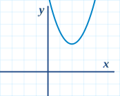
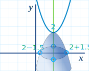

Quadratic Equations
An example of a Quadratic Equation:

The function makes nice curves like this one:
Name
The name Quadratic comes from "quad" meaning square, because the variable gets squared (like x2).
It is also called an "Equation of Degree 2" (because of the "2" on the x)
Standard Form
The Standard Form of a Quadratic Equation looks like this:

- a, b and c are known values. a can't be 0.
- "x" is the variable or unknown (we don't know it yet).
Here are some examples:
| 2x2 + 5x + 3 = 0 | In this one a=2, b=5 and c=3 | |
| x2 − 3x = 0 | This one is a little more tricky:
|
|
| 5x − 3 = 0 | Oops! This one is not a quadratic equation: it is missing x2 (in other words a=0, which means it can't be quadratic) |

Have a Play With It
Play with the "Quadratic Equation Explorer" so you can see:
- the function's graph, and
- the solutions (called "roots").
Hidden Quadratic Equations!
As we saw before, the Standard Form of a Quadratic Equation is
ax2 + bx + c = 0
But sometimes a quadratic equation does not look like that!
For example:
| In disguise | In Standard Form | a, b and c | |
|---|---|---|---|
| x2 = 3x − 1 | Move all terms to left hand side | x2 − 3x + 1 = 0 | a=1, b=−3, c=1 |
| 2(w2 − 2w) = 5 | Expand (undo the brackets), and move 5 to left |
2w2 − 4w − 5 = 0 | a=2, b=−4, c=−5 |
| z(z−1) = 3 | Expand, and move 3 to left | z2 − z − 3 = 0 | a=1, b=−1, c=−3 |
How To Solve Them?
The "solutions" to the Quadratic Equation are where it is equal to zero.
They are also called "roots", or sometimes "zeros"
There are usually 2 solutions (as shown in this graph).
And there are a few different ways to find the solutions:
![Quadratic Formula: x = [ -b (+-) sqrt(b^2 - 4ac) ] / 2a](images/quadratic-formula.svg)
Just plug in the values of a, b and c, and do the calculations.
We will look at this method in more detail now.
About the Quadratic Formula
Plus/Minus
First of all what is that plus/minus thing that looks like ± ?
The ± means there are TWO answers:
x = −b + √(b2 − 4ac) 2a
x = −b − √(b2 − 4ac) 2a
Here is an example with two answers:
But it does not always work out like that!
- Imagine if the curve "just touches" the x-axis.
- Or imagine the curve is so high it doesn't even cross the x-axis!
This is where the "Discriminant" helps us ...
Discriminant
Do you see b2 − 4ac in the formula above? It is called the Discriminant, because it can "discriminate" between the possible types of answer:
Complex solutions? Let's talk about them after we see how to use the formula.
Using the Quadratic Formula
Just put the values of a, b and c into the Quadratic Formula, and do the calculations.
Example: Solve 5x2 + 6x + 1 = 0

Answer: x = −0.2 or x = −1
And we see them on this graph.
| Check -0.2: | 5×(−0.2)2 + 6×(−0.2) + 1 = 5×(0.04) + 6×(−0.2) + 1 = 0.2 − 1.2 + 1 = 0 |
|
| Check -1: | 5×(−1)2 + 6×(−1) + 1 = 5×(1) + 6×(−1) + 1 = 5 − 6 + 1 = 0 |
Remembering The Formula
A kind reader suggested singing it to "Pop Goes the Weasel":
| ♫ | "x is equal to minus b | ♫ | "All around the mulberry bush | |
| plus or minus the square root | The monkey chased the weasel | |||
| of b-squared minus four a c | The monkey thought 'twas all in fun | |||
| ALL over two a" | Pop! goes the weasel" |
Try singing it a few times and it will get stuck in your head!
Or you can remember this story:
x = −b ± √(b2 − 4ac) 2a
"A negative boy was thinking yes or no about going to a party,
at the party he talked to a square boy but not to the 4 awesome chicks.
It was all over at 2 am."
Complex Solutions?
When the Discriminant (the value b2 − 4ac) is negative we get a pair of Complex solutions ... what does that mean?
It means our answer will include Imaginary Numbers. Wow!
Example: Solve 5x2 + 2x + 1 = 0
= −16
√(−16)
= 4i
(where i is the imaginary number √−1)

Answer: x = −0.2 ± 0.4i
The graph does not cross the x-axis. That is why we ended up with complex numbers.
In a way it is easier: we don't need more calculation, we leave it as −0.2 ± 0.4i.
Example: Solve x2 − 4x + 6.25 = 0
= −9
√(−9) = 3i
(where i is the imaginary number √−1)

Answer: x = 2 ± 1.5i
The graph does not cross the x-axis. That is why we ended up with complex numbers.

BUT an upside-down mirror image of our equation does cross the x-axis at 2 ± 1.5 (note: missing the i).
Just an interesting fact for you!
Summary
- Quadratic Equation in Standard Form: ax2 + bx + c = 0
- Quadratic Equations can be factored
- Quadratic Formula: x = −b ± √(b2 − 4ac) 2a
- When the Discriminant (b2−4ac) is:
- positive, there are 2 real solutions
- zero, there is one real solution
- negative, there are 2 complex solutions